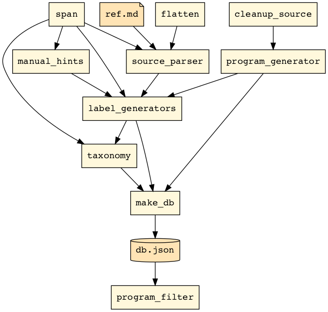

Package paroxython
Paroxython is a command-line tool which finds and tags algorithmic features (such as assignments, nested loops, tail-recursive functions, etc.) in a collection of small Python programs, typically gathered for educational purposes (e.g., examples, patterns, exercise corrections).
Each tag consists in a free-form label associated with its spanning lines. These labels are then mapped onto a knowledge taxonomy designed by the teacher with basic order constraints in mind (e.g., the fact that the introduction of the concept of early exit must come after that of loop, which itself requires that of control flow, is expressed with the following taxon: flow/loop/exit/early).
Source-codes, labels and taxons are stored in a database, which can finally be filtered through a pipeline of inclusion, exclusion and impartment commands on programs or taxons.
Installation
pip install paroxython
Test-drive
Terminal
paroxython --help
Jupyter notebook
Load the magic command:
%load_ext paroxython
Run it on a cell of Python code:
1 | %%paroxython def fibonacci(n): result = [] (a, b) = (0, 1) while a < n: result.append(a) (a, b) = (b, a + b) return result |
Output:
| Taxon | Lines |
|---|---|
call/method/append |
6 |
flow/loop/exit/late |
5-7 |
flow/loop/while |
5-7 |
metadata/sloc/8 |
2-8 |
operator/arithmetic/addition |
7 |
subroutine/argument/arg |
2 |
subroutine/function |
2-8 |
test/inequality |
5 |
type/number/integer/literal |
4 |
type/number/integer/literal/zero |
4 |
type/sequence/list |
6 |
type/sequence/list/literal/empty |
3 |
type/sequence/tuple/literal |
4, 4, 7, 7 |
variable/assignment/parallel |
4 |
variable/assignment/parallel/slide |
7 |
variable/assignment/single |
3 |
How it works

Pattern specifications
Browse spec.md on GitHub.
Default Taxonomy
Browse taxonomy.tsv on GitHub.
Sub-modules
paroxython.assess_costs-
Assess the learning cost associated with the introduction of the given programs …
paroxython.cliparoxython.compare_spansparoxython.derived_labels_dbparoxython.filter_programsparoxython.flatten_astparoxython.goodiesparoxython.label_programsparoxython.list_programsparoxython.make_dbparoxython.map_taxonomyparoxython.parse_programparoxython.preprocess_sourceparoxython.recommend_programs